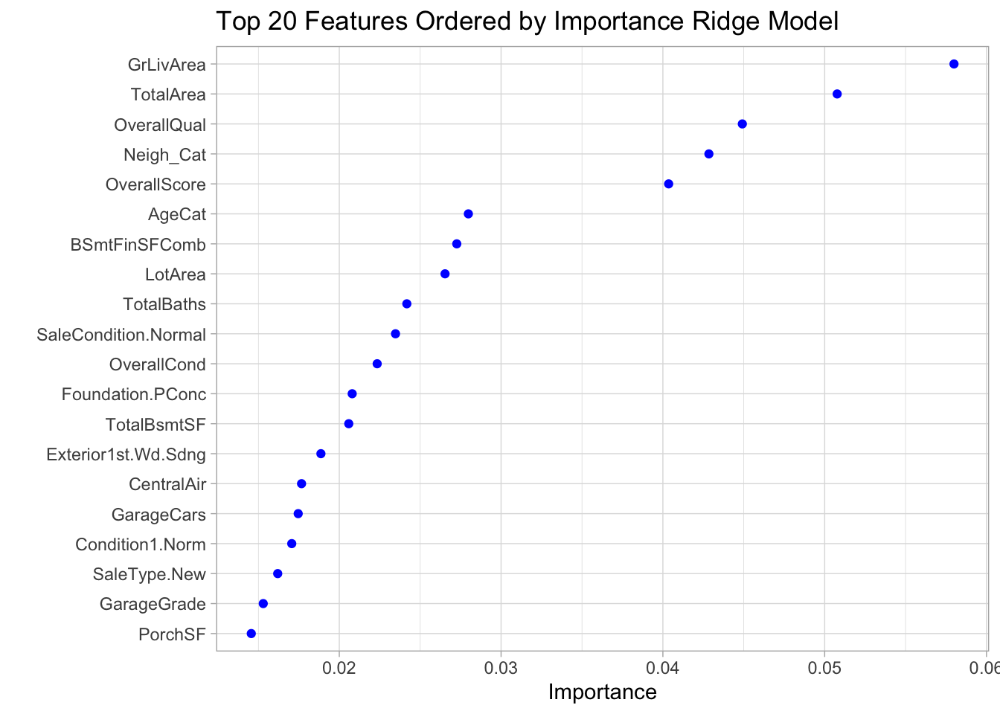
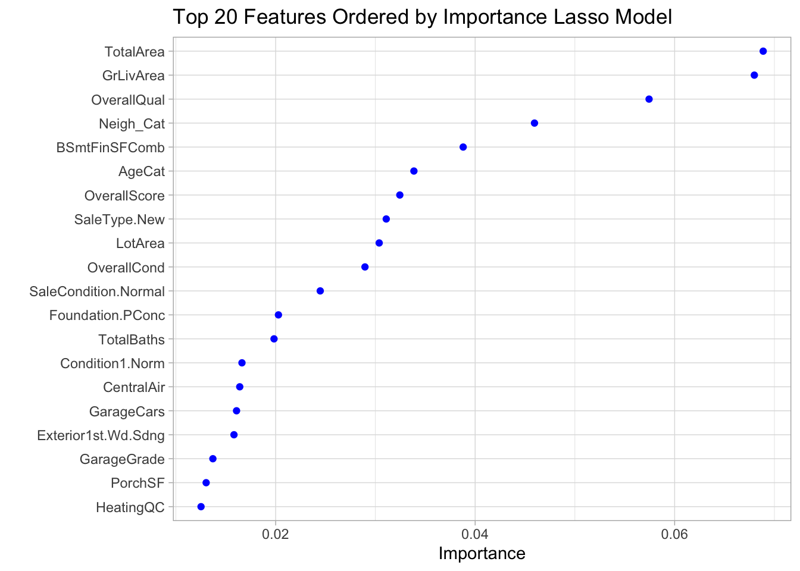
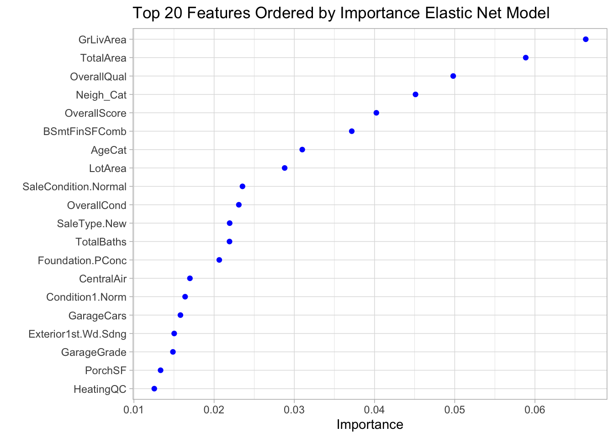
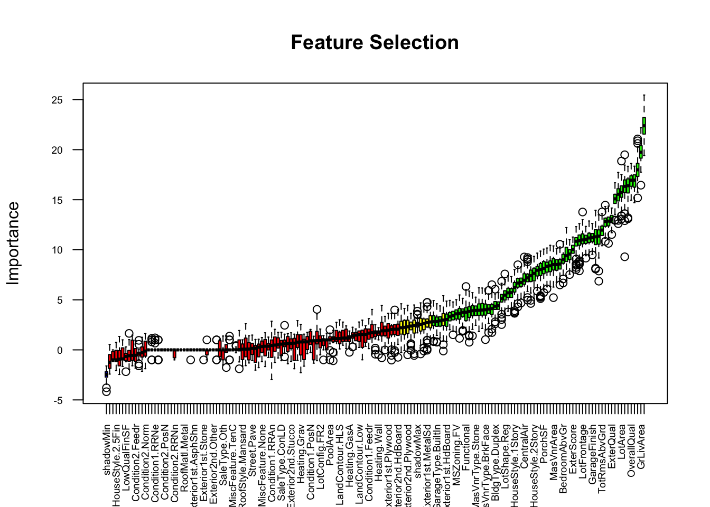

Chapter 5 Modeling
Clean Data
The original data, the “Ames Housing Data-set”, provided at Kaggle.com, contains 2919 observations and 80 explanatory variables. However, from this point on we are starting with an already cleaned and pre-processed data-set based on previous work, which consists of 2919 observations and 67 variables. After transforming the categorical variables to numerical with dummy coding, the columns increase to 167 columns.
## [1] 2915 67## Id MSSubClass MSZoning LotFrontage LotArea Street Alley LotShape LandContour
## 1 1 60 RL 65 8450 Pave None Reg Lvl
## 2 2 20 RL 80 9600 Pave None Reg Lvl
## 3 3 60 RL 68 11250 Pave None IR1 Lvl
## 4 4 70 RL 60 9550 Pave None IR1 Lvl
## 5 5 60 RL 84 14260 Pave None IR1 Lvl
## 6 6 50 RL 85 14115 Pave None IR1 Lvl
## Utilities LotConfig LandSlope Condition1 Condition2 BldgType
## 1 4 Inside 1 Norm Norm 1Fam
## 2 4 FR2 1 Feedr Norm 1Fam
## 3 4 Inside 1 Norm Norm 1Fam
## 4 4 Corner 1 Norm Norm 1Fam
## 5 4 FR2 1 Norm Norm 1Fam
## 6 4 Inside 1 Norm Norm 1FamDummy Codding: One of the last pre-processing steps before modeling
#Convert Categorical Features to numeric with dummy codding using function dummyVars() from Caret package.
factor_var <- which(lapply(ames_clean, class) == "factor")
data_temp<-ames_clean
dummy<- dummyVars(" ~ MSSubClass + MSZoning +Street + Alley+ LotShape + LandContour+ LotConfig + Condition1 + Condition2 + BldgType + HouseStyle + RoofStyle + RoofMatl+ Heating + Exterior1st + Exterior2nd + MasVnrType + Foundation + GarageType + SaleType + SaleCondition + MiscFeature" , data = data_temp, fullRank = TRUE)
pred<- data.frame (predict(dummy, data_temp))
data_final<-cbind(ames_clean[,-factor_var], pred)Split pre-processed dataset into Train and Test sets for modeling*
train_1<-data_final[1:1456,-1]
train_x<-select(train_1, -SalePrice)
train_y<-train_1$SalePrice
test_1<-data_final[1457:2915,-1]
test_1<-select(test_1, -SalePrice)
train_1$SalePrice<- log(train_1$SalePrice)
test_ID<-data_final[1457:2915,1]5.1 Multivariate Linear Regression Model
We start by fitting a multivariate linear regression model to illustrate the issue of multicollinearity present in our data. The model returns a warning: “Coefficients: (4 not defined because of singularities)”. This is due to variables that have perfect multicollinearity, so we find those variables and remove them.
##
## Call:
## lm(formula = SalePrice ~ ., data = train_1)
##
## Residuals:
## Min 1Q Median 3Q Max
## -0.69436 -0.05306 0.00131 0.05573 0.50403
##
## Coefficients: (4 not defined because of singularities)
## Estimate Std. Error t value Pr(>|t|)
## (Intercept) 8.495e+00 5.306e-01 16.010 < 2e-16 ***
## MSSubClass -5.914e-04 3.658e-04 -1.617 0.106167
## LotFrontage 3.249e-04 1.870e-04 1.737 0.082545 .
## LotArea 1.340e-06 4.116e-07 3.256 0.001159 **
## Utilities 1.214e-01 5.864e-02 2.071 0.038547 *
## LandSlope -2.158e-03 1.565e-02 -0.138 0.890348
## OverallQual 2.964e-02 1.235e-02 2.400 0.016534 *
## OverallCond 1.903e-02 1.236e-02 1.540 0.123864
## MasVnrArea 2.959e-05 2.518e-05 1.175 0.240064
## ExterQual 2.697e-02 1.321e-02 2.043 0.041303 *
## BsmtExposure 1.136e-02 3.740e-03 3.037 0.002435 **
## BsmtUnfSF -7.757e-05 9.950e-06 -7.796 1.30e-14 ***
## TotalBsmtSF 1.690e-04 1.645e-05 10.275 < 2e-16 ***
## HeatingQC 1.582e-02 4.236e-03 3.734 0.000197 ***
## CentralAir 7.256e-02 1.670e-02 4.346 1.49e-05 ***
## Electrical -5.148e-03 1.162e-02 -0.443 0.657835
## LowQualFinSF -3.450e-05 7.883e-05 -0.438 0.661748
## GrLivArea 2.430e-04 1.816e-05 13.381 < 2e-16 ***
## BedroomAbvGr -7.802e-03 5.881e-03 -1.327 0.184878
## TotRmsAbvGrd 6.069e-03 4.117e-03 1.474 0.140635
## Functional 6.326e-02 8.454e-03 7.482 1.34e-13 ***
## Fireplaces 1.334e-02 1.039e-02 1.284 0.199221
## FireplaceQu 4.493e-03 3.714e-03 1.210 0.226548
## GarageFinish 6.688e-03 5.304e-03 1.261 0.207606
## GarageCars 2.726e-02 1.003e-02 2.717 0.006672 **
## PavedDrive 1.629e-02 7.232e-03 2.252 0.024482 *
## WoodDeckSF 7.376e-05 2.624e-05 2.811 0.005019 **
## PoolArea 1.883e-04 9.372e-05 2.009 0.044747 *
## Fence -2.641e-03 2.698e-03 -0.979 0.327872
## MiscVal 1.259e-05 2.709e-05 0.465 0.642314
## NewBuild -2.413e-03 1.961e-02 -0.123 0.902113
## BSmtFinSFComb NA NA NA NA
## TotalArea NA NA NA NA
## TotalBaths 2.609e-02 6.748e-03 3.867 0.000116 ***
## PorchSF 1.649e-04 3.176e-05 5.194 2.39e-07 ***
## Neigh_Cat 3.822e-02 4.766e-03 8.019 2.37e-15 ***
## AgeCat 2.631e-02 7.014e-03 3.750 0.000184 ***
## LastSold 2.458e-03 2.287e-03 1.075 0.282674
## RemodelFromCat 3.273e-03 2.633e-03 1.243 0.214018
## SeasonSale 6.639e-03 4.002e-03 1.659 0.097356 .
## GarageScore 3.546e-03 2.107e-03 1.683 0.092565 .
## OverallScore 3.778e-03 2.132e-03 1.772 0.076620 .
## ExterScore -6.642e-03 2.923e-03 -2.273 0.023202 *
## KitchenScore 3.653e-03 5.379e-03 0.679 0.497210
## GarageGrade 1.733e-05 8.111e-06 2.136 0.032849 *
## MSSubClass.1 NA NA NA NA
## MSZoning.FV 4.157e-01 4.385e-02 9.479 < 2e-16 ***
## MSZoning.RH 4.071e-01 4.882e-02 8.339 < 2e-16 ***
## MSZoning.RL 4.066e-01 4.074e-02 9.979 < 2e-16 ***
## MSZoning.RM 3.531e-01 4.056e-02 8.707 < 2e-16 ***
## Street.Pave 3.815e-02 5.210e-02 0.732 0.464122
## Alley.None 2.037e-02 1.789e-02 1.138 0.255168
## Alley.Pave 3.381e-02 2.662e-02 1.270 0.204237
## LotShape.IR2 2.498e-02 1.872e-02 1.334 0.182286
## LotShape.IR3 5.335e-05 3.947e-02 0.001 0.998922
## LotShape.Reg -4.993e-04 7.190e-03 -0.069 0.944651
## LandContour.HLS 2.744e-02 2.235e-02 1.227 0.219889
## LandContour.Low -1.192e-02 2.806e-02 -0.425 0.670947
## LandContour.Lvl -4.264e-03 1.629e-02 -0.262 0.793621
## LotConfig.CulDSac 3.111e-02 1.530e-02 2.033 0.042280 *
## LotConfig.FR2 -2.522e-02 1.802e-02 -1.400 0.161849
## LotConfig.FR3 -6.387e-02 5.754e-02 -1.110 0.267177
## LotConfig.Inside -7.316e-03 8.140e-03 -0.899 0.368956
## Condition1.Feedr 4.951e-02 2.187e-02 2.263 0.023770 *
## Condition1.Norm 9.994e-02 1.810e-02 5.521 4.07e-08 ***
## Condition1.PosA 5.640e-02 4.502e-02 1.253 0.210481
## Condition1.PosN 8.356e-02 3.281e-02 2.547 0.010983 *
## Condition1.RRAe 5.565e-03 3.824e-02 0.146 0.884311
## Condition1.RRAn 8.021e-02 2.999e-02 2.674 0.007581 **
## Condition1.RRNe 4.897e-02 7.912e-02 0.619 0.536051
## Condition1.RRNn 1.060e-01 5.692e-02 1.862 0.062770 .
## Condition2.Feedr 1.046e-01 1.024e-01 1.021 0.307270
## Condition2.Norm 6.743e-02 8.762e-02 0.770 0.441688
## Condition2.PosA 1.426e-01 1.524e-01 0.936 0.349701
## Condition2.PosN -5.864e-02 1.440e-01 -0.407 0.683887
## Condition2.RRAe -2.268e-01 2.909e-01 -0.780 0.435698
## Condition2.RRAn -5.888e-02 1.413e-01 -0.417 0.676949
## Condition2.RRNn 4.416e-02 1.197e-01 0.369 0.712312
## BldgType.2fmCon 3.452e-02 5.406e-02 0.639 0.523232
## BldgType.Duplex -1.800e-02 2.965e-02 -0.607 0.543816
## BldgType.Twnhs -1.806e-02 4.290e-02 -0.421 0.673793
## BldgType.TwnhsE 2.163e-02 3.905e-02 0.554 0.579707
## HouseStyle.1.5Unf 2.946e-02 3.300e-02 0.893 0.372054
## HouseStyle.1Story -2.047e-02 1.639e-02 -1.248 0.212096
## HouseStyle.2.5Fin -8.517e-02 5.248e-02 -1.623 0.104827
## HouseStyle.2.5Unf 1.737e-02 3.999e-02 0.434 0.664057
## HouseStyle.2Story -9.424e-03 1.388e-02 -0.679 0.497180
## HouseStyle.SFoyer 2.553e-03 2.659e-02 0.096 0.923525
## HouseStyle.SLvl 1.744e-02 2.311e-02 0.755 0.450630
## RoofStyle.Gable 1.405e-02 8.105e-02 0.173 0.862408
## RoofStyle.Gambrel 1.347e-02 8.858e-02 0.152 0.879136
## RoofStyle.Hip 1.969e-02 8.133e-02 0.242 0.808764
## RoofStyle.Mansard 6.104e-02 9.486e-02 0.644 0.520004
## RoofStyle.Shed 2.584e-01 1.521e-01 1.699 0.089570 .
## RoofMatl.Membran 1.996e-01 1.378e-01 1.449 0.147622
## RoofMatl.Metal 5.291e-02 1.393e-01 0.380 0.704163
## RoofMatl.Roll -7.097e-02 1.147e-01 -0.619 0.536230
## RoofMatl.Tar.Grv 3.326e-02 8.162e-02 0.408 0.683676
## RoofMatl.WdShake -9.881e-02 6.704e-02 -1.474 0.140752
## RoofMatl.WdShngl 1.153e-01 5.264e-02 2.190 0.028723 *
## Heating.GasA 5.892e-02 1.105e-01 0.533 0.593931
## Heating.GasW 1.278e-01 1.137e-01 1.124 0.261192
## Heating.Grav -4.177e-02 1.178e-01 -0.355 0.722974
## Heating.OthW 1.040e-02 1.369e-01 0.076 0.939482
## Heating.Wall 1.247e-01 1.276e-01 0.977 0.328685
## Exterior1st.AsphShn -2.263e-02 1.493e-01 -0.152 0.879574
## Exterior1st.BrkComm -3.287e-01 1.107e-01 -2.969 0.003044 **
## Exterior1st.BrkFace 4.319e-02 5.494e-02 0.786 0.432012
## Exterior1st.CBlock -1.270e-01 1.143e-01 -1.111 0.266780
## Exterior1st.CemntBd -4.028e-02 8.327e-02 -0.484 0.628668
## Exterior1st.HdBoard -4.256e-02 5.534e-02 -0.769 0.442007
## Exterior1st.ImStucc -1.009e-01 1.264e-01 -0.798 0.424812
## Exterior1st.MetalSd -1.508e-02 6.326e-02 -0.238 0.811585
## Exterior1st.Plywood -5.533e-02 5.467e-02 -1.012 0.311643
## Exterior1st.Stone -3.110e-02 1.052e-01 -0.296 0.767641
## Exterior1st.Stucco -1.502e-02 6.068e-02 -0.247 0.804565
## Exterior1st.VinylSd -3.435e-02 5.891e-02 -0.583 0.559919
## Exterior1st.Wd.Sdng -7.155e-02 5.309e-02 -1.348 0.177940
## Exterior1st.WdShing -2.734e-02 5.738e-02 -0.476 0.633872
## Exterior2nd.AsphShn 5.852e-02 9.899e-02 0.591 0.554476
## Exterior2nd.Brk.Cmn 1.229e-01 7.388e-02 1.664 0.096441 .
## Exterior2nd.BrkFace 1.025e-03 5.786e-02 0.018 0.985863
## Exterior2nd.CBlock NA NA NA NA
## Exterior2nd.CmentBd 7.596e-02 8.275e-02 0.918 0.358781
## Exterior2nd.HdBoard 4.847e-02 5.396e-02 0.898 0.369303
## Exterior2nd.ImStucc 5.815e-02 6.430e-02 0.904 0.366003
## Exterior2nd.MetalSd 4.833e-02 6.240e-02 0.775 0.438741
## Exterior2nd.Other 2.814e-03 1.221e-01 0.023 0.981614
## Exterior2nd.Plywood 5.665e-02 5.234e-02 1.082 0.279266
## Exterior2nd.Stone 1.793e-02 7.471e-02 0.240 0.810416
## Exterior2nd.Stucco 7.762e-03 6.024e-02 0.129 0.897496
## Exterior2nd.VinylSd 5.862e-02 5.735e-02 1.022 0.306916
## Exterior2nd.Wd.Sdng 7.747e-02 5.208e-02 1.487 0.137145
## Exterior2nd.Wd.Shng 3.281e-02 5.468e-02 0.600 0.548544
## MasVnrType.BrkFace 3.287e-02 3.006e-02 1.093 0.274443
## MasVnrType.None 3.255e-02 3.025e-02 1.076 0.282046
## MasVnrType.Stone 6.150e-02 3.190e-02 1.928 0.054062 .
## Foundation.CBlock 2.373e-02 1.352e-02 1.755 0.079556 .
## Foundation.PConc 5.838e-02 1.486e-02 3.929 8.99e-05 ***
## Foundation.Slab 1.778e-02 3.359e-02 0.529 0.596572
## Foundation.Stone 6.588e-02 4.885e-02 1.349 0.177674
## Foundation.Wood -1.143e-01 6.609e-02 -1.729 0.084071 .
## GarageType.Attchd 7.806e-02 4.900e-02 1.593 0.111427
## GarageType.Basment 8.750e-02 5.646e-02 1.550 0.121436
## GarageType.BuiltIn 8.486e-02 5.100e-02 1.664 0.096322 .
## GarageType.CarPort 8.145e-02 6.365e-02 1.280 0.200876
## GarageType.Detchd 8.185e-02 4.877e-02 1.678 0.093563 .
## GarageType.None 9.647e-02 5.876e-02 1.642 0.100887
## SaleType.Con 1.265e-01 8.021e-02 1.578 0.114889
## SaleType.ConLD 1.217e-01 4.362e-02 2.790 0.005349 **
## SaleType.ConLI -2.227e-02 5.275e-02 -0.422 0.672925
## SaleType.ConLw 8.338e-03 5.422e-02 0.154 0.877812
## SaleType.CWD 1.003e-01 5.874e-02 1.708 0.087805 .
## SaleType.New 1.630e-01 6.970e-02 2.338 0.019529 *
## SaleType.Oth 9.708e-02 6.704e-02 1.448 0.147865
## SaleType.WD -3.658e-03 1.893e-02 -0.193 0.846788
## SaleCondition.AdjLand 7.040e-02 6.259e-02 1.125 0.260898
## SaleCondition.Alloca 6.623e-02 3.841e-02 1.724 0.084886 .
## SaleCondition.Family 1.107e-02 2.787e-02 0.397 0.691399
## SaleCondition.Normal 6.958e-02 1.305e-02 5.330 1.15e-07 ***
## SaleCondition.Partial -4.676e-02 6.687e-02 -0.699 0.484474
## MiscFeature.None 1.397e-01 4.332e-01 0.322 0.747158
## MiscFeature.Othr 8.469e-02 3.997e-01 0.212 0.832240
## MiscFeature.Shed 1.262e-01 4.151e-01 0.304 0.761101
## MiscFeature.TenC -1.627e-01 4.020e-01 -0.405 0.685704
## ---
## Signif. codes: 0 '***' 0.001 '**' 0.01 '*' 0.05 '.' 0.1 ' ' 1
##
## Residual standard error: 0.1062 on 1295 degrees of freedom
## Multiple R-squared: 0.936, Adjusted R-squared: 0.9281
## F-statistic: 118.4 on 160 and 1295 DF, p-value: < 2.2e-16#identify the linearly dependent variables
ld_vars <- attributes(alias(ml_model)$Complete)$dimnames[[1]]
#remove the linearly dependent variables variables
train_ld<-select(train_1, -all_of(ld_vars))Then, we fit the model again, and take a closer look at the the Variance Inflation Factors (VIFs), which measure extent to which a predictor is correlated with the other predictor variables. As we can see in the output, we find high levels of multicollinearity with VIF values greater than 10 in many cases. Ideally, we would like to keep the VIF values below 5.
Inspect the Variance Inflation Factors
## MSSubClass LotFrontage LotArea
## 30.983647 2.470684 2.125854
## Utilities LandSlope OverallQual
## 1.219122 2.417453 36.931049
## OverallCond MasVnrArea ExterQual
## 24.473003 2.563339 7.317738
## BsmtExposure BsmtUnfSF TotalBsmtSF
## 2.038810 2.498255 5.929023
## HeatingQC CentralAir Electrical
## 2.133314 2.195581 1.561926
## LowQualFinSF GrLivArea BedroomAbvGr
## 1.901055 10.507752 2.970499
## TotRmsAbvGrd Functional Fireplaces
## 5.681774 1.446358 5.567577
## FireplaceQu GarageFinish GarageCars
## 5.826712 2.885926 7.079632
## PavedDrive WoodDeckSF PoolArea
## 1.668464 1.392981 1.419251
## Fence MiscVal NewBuild
## 1.362146 23.381710 4.911904
## TotalBaths PorchSF Neigh_Cat
## 3.557811 1.431181 3.325601
## AgeCat LastSold RemodelFromCat
## 6.724464 1.193224 2.642765
## SeasonSale GarageScore OverallScore
## 1.137311 8.133184 49.407995
## ExterScore KitchenScore GarageGrade
## 4.853052 2.737940 6.403865
## MSZoning.FV MSZoning.RH MSZoning.RL
## 10.592837 3.344599 35.842404
## MSZoning.RM Street.Pave Alley.None
## 27.045870 1.438511 2.422478
## Alley.Pave LotShape.IR2 LotShape.IR3
## 2.503946 1.238556 1.235801
## LotShape.Reg LandContour.HLS LandContour.Low
## 1.546704 2.139764 2.451706
## LandContour.Lvl LotConfig.CulDSac LotConfig.FR2
## 3.112040 1.826317 1.309673
## LotConfig.FR3 LotConfig.Inside Condition1.Feedr
## 1.171462 1.718256 3.208643
## Condition1.Norm Condition1.PosA Condition1.PosN
## 4.972023 1.429983 1.697261
## Condition1.RRAe Condition1.RRAn Condition1.RRNe
## 1.415759 2.037224 1.108994
## Condition1.RRNn Condition2.Feedr Condition2.Norm
## 1.431950 5.558168 9.441338
## Condition2.PosA Condition2.PosN Condition2.RRAe
## 2.058543 1.837783 7.498325
## Condition2.RRAn Condition2.RRNn BldgType.2fmCon
## 1.769292 2.539791 7.865580
## BldgType.Duplex BldgType.Twnhs BldgType.TwnhsE
## 3.909723 6.811730 14.211555
## HouseStyle.1.5Unf HouseStyle.1Story HouseStyle.2.5Fin
## 1.339025 8.676608 1.943176
## HouseStyle.2.5Unf HouseStyle.2Story HouseStyle.SFoyer
## 1.548757 5.250288 2.261303
## HouseStyle.SLvl RoofStyle.Gable RoofStyle.Gambrel
## 2.941887 144.148227 7.597002
## RoofStyle.Hip RoofStyle.Mansard RoofStyle.Shed
## 133.758957 5.559546 4.097060
## RoofMatl.Membran RoofMatl.Metal RoofMatl.Roll
## 1.682526 1.720093 1.166139
## RoofMatl.Tar.Grv RoofMatl.WdShake RoofMatl.WdShngl
## 6.450158 1.986501 1.224843
## Heating.GasA Heating.GasW Heating.Grav
## 33.888788 20.383640 8.574881
## Heating.OthW Heating.Wall Exterior1st.AsphShn
## 3.320637 5.761418 1.976400
## Exterior1st.BrkComm Exterior1st.BrkFace Exterior1st.CBlock
## 2.172081 12.927967 1.157706
## Exterior1st.CemntBd Exterior1st.HdBoard Exterior1st.ImStucc
## 35.375768 50.914795 1.417138
## Exterior1st.MetalSd Exterior1st.Plywood Exterior1st.Stone
## 66.278376 26.505523 1.961641
## Exterior1st.Stucco Exterior1st.VinylSd Exterior1st.Wd.Sdng
## 7.709559 102.465002 44.025069
## Exterior1st.WdShing Exterior2nd.AsphShn Exterior2nd.Brk.Cmn
## 7.457993 2.601873 3.372932
## Exterior2nd.BrkFace Exterior2nd.CmentBd Exterior2nd.HdBoard
## 7.294757 34.379097 45.681446
## Exterior2nd.ImStucc Exterior2nd.MetalSd Exterior2nd.Other
## 3.280025 63.046316 1.321348
## Exterior2nd.Plywood Exterior2nd.Stone Exterior2nd.Stucco
## 31.136379 2.467118 7.909456
## Exterior2nd.VinylSd Exterior2nd.Wd.Sdng Exterior2nd.Wd.Shng
## 96.147013 40.984547 9.813104
## MasVnrType.BrkFace MasVnrType.None MasVnrType.Stone
## 24.733962 28.401976 10.387808
## Foundation.CBlock Foundation.PConc Foundation.Slab
## 5.806813 7.031170 2.361712
## Foundation.Stone Foundation.Wood GarageType.Attchd
## 1.264687 1.159983 74.698954
## GarageType.Basment GarageType.BuiltIn GarageType.CarPort
## 5.301258 18.867666 3.214034
## GarageType.Detchd GarageType.None SaleType.Con
## 59.952842 23.426135 1.139684
## SaleType.ConLD SaleType.ConLI SaleType.ConLw
## 1.509614 1.229721 1.299290
## SaleType.CWD SaleType.New SaleType.Oth
## 1.220638 47.439700 1.193552
## SaleType.WD SaleCondition.AdjLand SaleCondition.Alloca
## 5.274011 1.385924 1.557201
## SaleCondition.Family SaleCondition.Normal SaleCondition.Partial
## 1.359023 3.217916 44.657412
## MiscFeature.None MiscFeature.Othr MiscFeature.Shed
## 865.674765 28.304742 723.737076
## MiscFeature.TenC
## 14.326448Dealing with Multicollinearity
The curse of dimensionality refers to the phenomenon that many types of data analysis become significantly harder as the dimensionality of the data increases (Tan et al. (2019)). As more variables get added and the complexity of the patterns increase, the training of the model becomes more time consuming and the predictive power decreases.
Multicollinearity for example, is a common problem in high‐dimensional data. Multicollinearity occurs when two or more predictor variables are highly correlated, and becomes a problem in many prediction settings. It is specially problematic in regression, since one of the assumptions of linear regression is the absence of multicollinearity and auto-correlation. As the number of features grow, regression models tend to over-fit the training data, causing the sample error to increase.
Some approaches for dimensionality reduction are linear algebra based techniques such as Principal Component Analysis(PCA), which finds new attributes (principal components) that are linear combinations of the original attributes orthogonal to each other, and which capture the maximum amount of variation in the data. Another approach is a filter method, where the features are selected prior to modeling for their statistical value to the model, for example when features are selected for their correlation value with the predicted variable. Wrapper, methods are also popular, these include Forward and Backward Elimination. There are also some algorithms that have their built in functions for feature selection, like Lasso regression.
This analysis deals with some of the issues that arise from high dimensionality by implementing regularized regression using the glmnet package (Friedman, Hastie, and Tibshirani 2010). We will also implement a wrapper method with a model called Boruta (Kursa and Rudnicki 2010) to do feature selection prior to fitting a gradient boosted model with the xgboost package(Chen et al. 2021).
5.2 Model Selection
One of the ways to deal with high multicollinearity is through regularization. Regularization is a regression technique, which limits, regulates or shrinks the estimated coefficient towards zero, which can reduce the variance and decrease out of sample error (Boehmke and Greenwell 2020). This technique does not encourage learning of more complex models, and so it avoids the risk of over-fitting. I want to note that I referenced heavily the code in the digital book :“Hands-On Machine Learning with R” by Bradley Boehmke & Brandon Greenwell (Boehmke and Greenwell 2020) for the modeling portion of the Regularized regression models.
Three regularization methods that help with collinearity and over-fitting are:
- Lasso, penalizes the number of non-zero coefficients
- Ridge, penalizes the absolute magnitude of the coefficients
- Elastic Net, a mixed method closely linked to lasso and ridge regression
In addition to the methods listed above, we will also try a different approach using feature subset selection with the Boruta package (Kursa and Rudnicki 2010) prior to fitting a gradient boosted tree, with the XGBoost package.
Model Selection
| Model | Model Type | Tuning Parameters |
|---|---|---|
| Lasso | Regularization | lambda |
| Ridge | Regularization | lambda |
| Elastic | Regularization | lambda |
| xgboost | Extreme Gradient Boosting | general & tree booster parameters |
5.3 Regularized Regression Models
The lasso model penalty is controlled by setting alpha=1, likewise the ridge penalty is controlled by alpha=0. The elastic-net penalty is controlled by alpha between 0 and 1. The tuning parameter lambda controls the overall strength of the penalty.
5.3.1 Identify the Optimal Lambda Parameter
To identify the optimal lambda value we used 10-fold cross-validation (CV) with cv.glmnet() from the glmnet package (Friedman, Hastie, and Tibshirani 2010). We selected the minimum lambda value as the metric to determine the optimal lambda value.
The figures show the 10-fold CV MSE across all the log lamda values. The numbers across the top of the plot are the number of features in the model. The first dashed line represents the log lamda value with the minimum MSE, and the second is the largest log lamda value within one standard error of it.
train_x2<-select(train_x, -SalePrice)
test_x2<-select(test_x, -SalePrice)
train_y<- log(train_final$SalePrice)Ridge Model*
##
## Call: cv.glmnet(x = as.matrix(train_x2), y = train_y, alpha = 0)
##
## Measure: Mean-Squared Error
##
## Lambda Index Measure SE Nonzero
## min 0.03246 100 0.01352 0.0009632 75
## 1se 0.17325 82 0.01445 0.0010423 75Figure 5.1: Ridge Optimal Lamda
## The optimal lambda value selected for the ridge model is: 0.03246428## And the ridge model retains all features, that is 75 features in total.Lasso Model*
##
## Call: cv.glmnet(x = as.matrix(train_x2), y = train_y, alpha = 1)
##
## Measure: Mean-Squared Error
##
## Lambda Index Measure SE Nonzero
## min 0.001222 61 0.01346 0.0009675 51
## 1se 0.007857 41 0.01429 0.0011390 33Figure 5.2: Lasso Optimal Lamda
## The optimal lambda value selected for the lasso model is: 0.001222259## And the number of features to be retained is: 51Elastic Net Model *
##
## Call: cv.glmnet(x = data.matrix(train_x2), y = train_y, alpha = 0.1)
##
## Measure: Mean-Squared Error
##
## Lambda Index Measure SE Nonzero
## min 0.01114 62 0.01342 0.000971 55
## 1se 0.06523 43 0.01426 0.001123 44Figure 5.3: Elastic Net Optimal Lamda
## The optimal lambda value selected for the Elastic Net model is: 0.01113677## And the number of features to be retained is: 555.4 Training the Regularized Regression Models
#Select lambda that reduces error
penalty_ridge <- glm_cv_ridge$lambda.min
penalty_lasso <- glm_cv_lasso$lambda.min
penalty_net <- glm_cv_net$lambda.min
set.seed(123)
glm_ridge_mod <- glmnet(x = as.matrix(train_x2), y = train_y, alpha = 0, lambda = penalty_ridge,standardize = FALSE)
glm_lasso_mod <- glmnet(x = as.matrix(train_x2), y = train_y, alpha = 1, lambda = penalty_lasso,standardize = FALSE)
glm_net_mod <- glmnet(x = as.matrix(train_x2), y = train_y, alpha = 0.1, lambda = penalty_net,standardize = FALSE)5.5 Evaluating the Regularized Regression Models’ Performance
The performance accuracy of the models was evaluated by comparing the predictions of each model with the actual sale prices in the training data. The graphs below show the predicted vs true Sale Price, and the score is the Root-Mean-Square Error(RMSE), which is the same metric Kaggle uses in its prediction evaluation for prediction submissions. The smaller the RMSE value the better, and the closer the dots are to the red dashed line, the closer the predicted values are to the actual values (this is based the on training data-set).
(#fig:plot_pred_ridge)Ridge Fit
(#fig:plot_pred_lasso)Lasso Fit
(#fig:plot_pred_net)Elastic Net Fit
The three regression models Lasso, Ridge, and Elastic Net performed similarly during training, with RMSE of about 0.11. The choice for best model is the Elastic Net model, because it includes fewer features, so it is a simpler model.
| Models | Parameters | Features | Rsquared | Corr | RMSE |
|---|---|---|---|---|---|
| Ridge | 0.0324643 | 75 | 0.9222852 | 0.9604194 | 0.1103787 |
| Lasso | 0.0012223 | 51 | 0.9226179 | 0.9605517 | 0.1101422 |
| Elastic Net | 0.0111368 | 55 | 0.9223046 | 0.9604168 | 0.1103650 |
Among the top features selected by the Elastic Net model, are several of the features created during the feature engineering phase. For example, the Total Area, Neighborhodd Category, Overall Score, Total Baths, and Age Category are in the top most important features, and all of these were the result of feature engineering.
(#fig:net_features)Elastic Net Features
lassoVarImp <- varImp(glm_lasso_mod,scale=F, lambda = penalty_lasso)
lassoImportance <- lassoVarImp$importance
varsSelected <- length(which(lassoImportance$Overall!=0))
varsNotSelected <- length(which(lassoImportance$Overall==0))


5.6 Training XGBoost Model with Feature Selection
Next we will implement an advanced machine learning model with a gradient boosted tree model using the xgboost package (Chen et al. 2021). First, we will do some feature selection using the Boruta algorithm from the Boruta package (Kursa and Rudnicki 2010).
The Boruta algorithm is a wrapper built around the random forest classification algorithm. It selects the important features with respect to the outcome variable.
Feature Selection
Boruta selected 65 attributes confirmed important, and 88 attributes confirmed unimportant. After the boruta feature selection, 88 features were removed, living the data-set with 75 columns, the selected features are listed in the next page.
# The Boruta algorithm for feature selection uses Random Forest
set.seed(123) # to get same results
train_boruta <- Boruta(SalePrice~., data=train_1, doTrace=2, maxRuns=125)
# printing the results
#print(train_boruta)Selected Features:
## [1] "MSSubClass" "LotFrontage" "LotArea"
## [4] "OverallQual" "OverallCond" "MasVnrArea"
## [7] "ExterQual" "BsmtExposure" "BsmtUnfSF"
## [10] "TotalBsmtSF" "HeatingQC" "CentralAir"
## [13] "Electrical" "GrLivArea" "BedroomAbvGr"
## [16] "TotRmsAbvGrd" "Functional" "Fireplaces"
## [19] "FireplaceQu" "GarageFinish" "GarageCars"
## [22] "PavedDrive" "WoodDeckSF" "NewBuild"
## [25] "BSmtFinSFComb" "TotalArea" "TotalBaths"
## [28] "PorchSF" "Neigh_Cat" "AgeCat"
## [31] "RemodelFromCat" "GarageScore" "OverallScore"
## [34] "ExterScore" "KitchenScore" "GarageGrade"
## [37] "MSSubClass.1" "MSZoning.FV" "MSZoning.RL"
## [40] "MSZoning.RM" "LotShape.Reg" "LandContour.Lvl"
## [43] "LotConfig.CulDSac" "BldgType.Duplex" "BldgType.Twnhs"
## [46] "BldgType.TwnhsE" "HouseStyle.1Story" "HouseStyle.2Story"
## [49] "HouseStyle.SLvl" "RoofStyle.Gable" "RoofStyle.Hip"
## [52] "Exterior1st.CemntBd" "Exterior1st.HdBoard" "Exterior1st.VinylSd"
## [55] "Exterior2nd.CmentBd" "Exterior2nd.MetalSd" "Exterior2nd.Plywood"
## [58] "Exterior2nd.VinylSd" "MasVnrType.BrkFace" "MasVnrType.None"
## [61] "MasVnrType.Stone" "Foundation.CBlock" "Foundation.PConc"
## [64] "GarageType.Attchd" "GarageType.BuiltIn" "GarageType.Detchd"
## [67] "GarageType.None" "SaleType.New" "SaleType.WD"
## [70] "SaleCondition.Normal" "SaleCondition.Partial"This plot shows the selected features in green, and the rejected features in red. The yellow, represent tentative attributes.

5.6.1 Training the XGboost Model
The XGBoost model has several sets of parameters that can be customized: we focused on only two: general parameters, which relate to which booster is used, in this case we selected a ‘gbtree’; and the second parameters we tuned were the booster parameters. For the booster parameter, we used 5-fold cross validation to determine the optimal number of rounds. For the rest of the booster parameters, the best way to find the optimal parameters is to set a search grid, however this was taking too long (more than an hour to run). So, instead of using this approach I started with the default parameters, and manually changed the min_child_weight(default=1), and eta(default = 0.3), about three times, until I got a better RMSE on the training data. This is not the ideal way to do it, but I am not sure my computer was ever going to get through it.
The final parameters chosen, which resulted in training RMSE:0.125043, were:
5.6.1.1 Tuning Paraments
## [1] train-rmse:10.953498+0.002662 test-rmse:10.953500+0.011326
## Multiple eval metrics are present. Will use test_rmse for early stopping.
## Will train until test_rmse hasn't improved in 10 rounds.
##
## [2] train-rmse:10.407027+0.002537 test-rmse:10.407029+0.011470
## [3] train-rmse:9.887894+0.002419 test-rmse:9.887896+0.011608
## [4] train-rmse:9.394737+0.002307 test-rmse:9.394738+0.011742
## [5] train-rmse:8.926258+0.002201 test-rmse:8.926259+0.011869
## [6] train-rmse:8.481207+0.002096 test-rmse:8.481372+0.012111
## [7] train-rmse:8.058389+0.001994 test-rmse:8.058555+0.011639
## [8] train-rmse:7.656692+0.001894 test-rmse:7.656859+0.011849
## [9] train-rmse:7.275063+0.001801 test-rmse:7.275431+0.011417
## [10] train-rmse:6.912498+0.001711 test-rmse:6.912623+0.010976
## [11] train-rmse:6.568046+0.001629 test-rmse:6.568478+0.010851
## [12] train-rmse:6.240804+0.001547 test-rmse:6.240951+0.010706
## [13] train-rmse:5.929916+0.001471 test-rmse:5.930394+0.010632
## [14] train-rmse:5.634563+0.001398 test-rmse:5.634505+0.010604
## [15] train-rmse:5.353969+0.001329 test-rmse:5.354346+0.010289
## [16] train-rmse:5.087400+0.001263 test-rmse:5.087583+0.010231
## [17] train-rmse:4.834158+0.001198 test-rmse:4.834051+0.010390
## [18] train-rmse:4.593575+0.001139 test-rmse:4.593887+0.009861
## [19] train-rmse:4.365023+0.001083 test-rmse:4.365229+0.009583
## [20] train-rmse:4.147903+0.001030 test-rmse:4.147886+0.009588
## [21] train-rmse:3.941640+0.000976 test-rmse:3.941590+0.009583
## [22] train-rmse:3.745685+0.000930 test-rmse:3.745705+0.009580
## [23] train-rmse:3.559526+0.000880 test-rmse:3.559161+0.009203
## [24] train-rmse:3.382670+0.000831 test-rmse:3.382171+0.009355
## [25] train-rmse:3.214658+0.000789 test-rmse:3.214105+0.009070
## [26] train-rmse:3.055035+0.000754 test-rmse:3.054762+0.009103
## [27] train-rmse:2.903400+0.000711 test-rmse:2.903178+0.009339
## [28] train-rmse:2.759342+0.000675 test-rmse:2.759266+0.009237
## [29] train-rmse:2.622475+0.000636 test-rmse:2.622701+0.009289
## [30] train-rmse:2.492446+0.000593 test-rmse:2.492574+0.009357
## [31] train-rmse:2.368930+0.000565 test-rmse:2.368912+0.009414
## [32] train-rmse:2.251575+0.000549 test-rmse:2.251385+0.009793
## [33] train-rmse:2.140104+0.000520 test-rmse:2.139894+0.009558
## [34] train-rmse:2.034207+0.000489 test-rmse:2.034325+0.009486
## [35] train-rmse:1.933595+0.000466 test-rmse:1.933504+0.009618
## [36] train-rmse:1.838021+0.000442 test-rmse:1.837935+0.009536
## [37] train-rmse:1.747226+0.000427 test-rmse:1.747222+0.009566
## [38] train-rmse:1.660984+0.000395 test-rmse:1.661250+0.009462
## [39] train-rmse:1.579069+0.000377 test-rmse:1.579350+0.009699
## [40] train-rmse:1.501250+0.000364 test-rmse:1.501468+0.009740
## [41] train-rmse:1.427334+0.000348 test-rmse:1.427608+0.009724
## [42] train-rmse:1.357122+0.000329 test-rmse:1.357372+0.009754
## [43] train-rmse:1.290431+0.000311 test-rmse:1.290948+0.009706
## [44] train-rmse:1.227095+0.000305 test-rmse:1.227542+0.009601
## [45] train-rmse:1.166930+0.000309 test-rmse:1.167430+0.009664
## [46] train-rmse:1.109773+0.000313 test-rmse:1.110418+0.009641
## [47] train-rmse:1.055510+0.000312 test-rmse:1.056204+0.009705
## [48] train-rmse:1.003953+0.000291 test-rmse:1.004609+0.009401
## [49] train-rmse:0.954989+0.000305 test-rmse:0.955836+0.009388
## [50] train-rmse:0.908505+0.000308 test-rmse:0.909544+0.009386
## [51] train-rmse:0.864328+0.000302 test-rmse:0.865553+0.009170
## [52] train-rmse:0.822398+0.000306 test-rmse:0.823729+0.009069
## [53] train-rmse:0.782591+0.000309 test-rmse:0.784122+0.008928
## [54] train-rmse:0.744773+0.000315 test-rmse:0.746417+0.008772
## [55] train-rmse:0.708864+0.000335 test-rmse:0.710733+0.008631
## [56] train-rmse:0.674771+0.000340 test-rmse:0.676792+0.008518
## [57] train-rmse:0.642397+0.000350 test-rmse:0.644716+0.008424
## [58] train-rmse:0.611671+0.000363 test-rmse:0.614350+0.008328
## [59] train-rmse:0.582489+0.000379 test-rmse:0.585387+0.008089
## [60] train-rmse:0.554802+0.000405 test-rmse:0.557844+0.007957
## [61] train-rmse:0.528515+0.000438 test-rmse:0.531768+0.007987
## [62] train-rmse:0.503541+0.000451 test-rmse:0.507436+0.007835
## [63] train-rmse:0.479847+0.000440 test-rmse:0.484284+0.007884
## [64] train-rmse:0.457369+0.000446 test-rmse:0.462039+0.007809
## [65] train-rmse:0.436032+0.000469 test-rmse:0.441179+0.007759
## [66] train-rmse:0.415778+0.000474 test-rmse:0.421474+0.007806
## [67] train-rmse:0.396563+0.000478 test-rmse:0.402679+0.007802
## [68] train-rmse:0.378304+0.000493 test-rmse:0.384998+0.007727
## [69] train-rmse:0.361010+0.000509 test-rmse:0.368250+0.007626
## [70] train-rmse:0.344615+0.000519 test-rmse:0.352482+0.007567
## [71] train-rmse:0.329046+0.000538 test-rmse:0.337491+0.007509
## [72] train-rmse:0.314294+0.000534 test-rmse:0.323483+0.007389
## [73] train-rmse:0.300291+0.000554 test-rmse:0.310218+0.007333
## [74] train-rmse:0.287039+0.000564 test-rmse:0.297528+0.007181
## [75] train-rmse:0.274457+0.000550 test-rmse:0.285703+0.007074
## [76] train-rmse:0.262548+0.000551 test-rmse:0.274595+0.007097
## [77] train-rmse:0.251266+0.000602 test-rmse:0.264129+0.007034
## [78] train-rmse:0.240584+0.000613 test-rmse:0.254369+0.007087
## [79] train-rmse:0.230480+0.000642 test-rmse:0.245206+0.007038
## [80] train-rmse:0.220903+0.000670 test-rmse:0.236374+0.007032
## [81] train-rmse:0.211861+0.000701 test-rmse:0.228288+0.006980
## [82] train-rmse:0.203254+0.000708 test-rmse:0.220612+0.006813
## [83] train-rmse:0.195151+0.000718 test-rmse:0.213478+0.006736
## [84] train-rmse:0.187469+0.000705 test-rmse:0.206846+0.006694
## [85] train-rmse:0.180213+0.000708 test-rmse:0.200539+0.006668
## [86] train-rmse:0.173364+0.000730 test-rmse:0.194680+0.006611
## [87] train-rmse:0.166874+0.000763 test-rmse:0.189286+0.006525
## [88] train-rmse:0.160735+0.000805 test-rmse:0.184193+0.006434
## [89] train-rmse:0.154921+0.000829 test-rmse:0.179433+0.006418
## [90] train-rmse:0.149479+0.000854 test-rmse:0.175101+0.006402
## [91] train-rmse:0.144336+0.000856 test-rmse:0.171043+0.006303
## [92] train-rmse:0.139483+0.000921 test-rmse:0.167266+0.006210
## [93] train-rmse:0.134862+0.000956 test-rmse:0.163805+0.006214
## [94] train-rmse:0.130473+0.000948 test-rmse:0.160556+0.006201
## [95] train-rmse:0.126380+0.000990 test-rmse:0.157546+0.006104
## [96] train-rmse:0.122531+0.001017 test-rmse:0.154845+0.005983
## [97] train-rmse:0.118931+0.001034 test-rmse:0.152217+0.005826
## [98] train-rmse:0.115578+0.001052 test-rmse:0.149739+0.005760
## [99] train-rmse:0.112366+0.001043 test-rmse:0.147436+0.005612
## [100] train-rmse:0.109314+0.001079 test-rmse:0.145427+0.005504
## [101] train-rmse:0.106473+0.001115 test-rmse:0.143636+0.005468
## [102] train-rmse:0.103867+0.001089 test-rmse:0.141874+0.005426
## [103] train-rmse:0.101354+0.001069 test-rmse:0.140297+0.005344
## [104] train-rmse:0.099028+0.001117 test-rmse:0.138833+0.005311
## [105] train-rmse:0.096839+0.001098 test-rmse:0.137570+0.005304
## [106] train-rmse:0.094805+0.001054 test-rmse:0.136295+0.005254
## [107] train-rmse:0.092885+0.001042 test-rmse:0.135233+0.005278
## [108] train-rmse:0.091067+0.001043 test-rmse:0.134260+0.005238
## [109] train-rmse:0.089406+0.001055 test-rmse:0.133389+0.005237
## [110] train-rmse:0.087738+0.001034 test-rmse:0.132444+0.005219
## [111] train-rmse:0.086227+0.001034 test-rmse:0.131624+0.005182
## [112] train-rmse:0.084791+0.001035 test-rmse:0.130840+0.005181
## [113] train-rmse:0.083434+0.000984 test-rmse:0.130097+0.005214
## [114] train-rmse:0.082178+0.000965 test-rmse:0.129512+0.005172
## [115] train-rmse:0.081006+0.000992 test-rmse:0.128944+0.005153
## [116] train-rmse:0.079896+0.000981 test-rmse:0.128416+0.005154
## [117] train-rmse:0.078860+0.000970 test-rmse:0.127933+0.005181
## [118] train-rmse:0.077855+0.000998 test-rmse:0.127476+0.005202
## [119] train-rmse:0.076890+0.000992 test-rmse:0.127017+0.005212
## [120] train-rmse:0.075970+0.000990 test-rmse:0.126728+0.005171
## [121] train-rmse:0.075147+0.001004 test-rmse:0.126367+0.005158
## [122] train-rmse:0.074300+0.001009 test-rmse:0.126011+0.005164
## [123] train-rmse:0.073515+0.000997 test-rmse:0.125725+0.005244
## [124] train-rmse:0.072737+0.000951 test-rmse:0.125451+0.005214
## [125] train-rmse:0.072030+0.000995 test-rmse:0.125222+0.005238
## [126] train-rmse:0.071333+0.001023 test-rmse:0.124928+0.005211
## [127] train-rmse:0.070672+0.001045 test-rmse:0.124678+0.005223
## [128] train-rmse:0.070039+0.001048 test-rmse:0.124509+0.005232
## [129] train-rmse:0.069458+0.001091 test-rmse:0.124378+0.005313
## [130] train-rmse:0.068888+0.001182 test-rmse:0.124222+0.005365
## [131] train-rmse:0.068351+0.001155 test-rmse:0.124061+0.005331
## [132] train-rmse:0.067799+0.001137 test-rmse:0.123878+0.005335
## [133] train-rmse:0.067282+0.001070 test-rmse:0.123718+0.005393
## [134] train-rmse:0.066808+0.001134 test-rmse:0.123649+0.005443
## [135] train-rmse:0.066353+0.001011 test-rmse:0.123494+0.005567
## [136] train-rmse:0.065917+0.000970 test-rmse:0.123389+0.005598
## [137] train-rmse:0.065432+0.000881 test-rmse:0.123264+0.005637
## [138] train-rmse:0.064958+0.000864 test-rmse:0.123180+0.005666
## [139] train-rmse:0.064510+0.000941 test-rmse:0.123115+0.005711
## [140] train-rmse:0.064169+0.000919 test-rmse:0.122997+0.005730
## [141] train-rmse:0.063687+0.000850 test-rmse:0.122962+0.005700
## [142] train-rmse:0.063311+0.000782 test-rmse:0.122891+0.005732
## [143] train-rmse:0.062984+0.000768 test-rmse:0.122841+0.005741
## [144] train-rmse:0.062638+0.000769 test-rmse:0.122715+0.005741
## [145] train-rmse:0.062291+0.000781 test-rmse:0.122663+0.005797
## [146] train-rmse:0.061941+0.000751 test-rmse:0.122614+0.005782
## [147] train-rmse:0.061664+0.000754 test-rmse:0.122546+0.005762
## [148] train-rmse:0.061290+0.000729 test-rmse:0.122474+0.005795
## [149] train-rmse:0.061028+0.000710 test-rmse:0.122407+0.005812
## [150] train-rmse:0.060742+0.000670 test-rmse:0.122370+0.005849
## [151] train-rmse:0.060512+0.000701 test-rmse:0.122330+0.005841
## [152] train-rmse:0.060188+0.000638 test-rmse:0.122257+0.005904
## [153] train-rmse:0.059867+0.000700 test-rmse:0.122229+0.005944
## [154] train-rmse:0.059528+0.000718 test-rmse:0.122175+0.005927
## [155] train-rmse:0.059106+0.000696 test-rmse:0.122148+0.005902
## [156] train-rmse:0.058870+0.000666 test-rmse:0.122145+0.005894
## [157] train-rmse:0.058633+0.000672 test-rmse:0.122058+0.005910
## [158] train-rmse:0.058340+0.000707 test-rmse:0.122022+0.005916
## [159] train-rmse:0.058092+0.000754 test-rmse:0.121986+0.005919
## [160] train-rmse:0.057842+0.000682 test-rmse:0.121972+0.005934
## [161] train-rmse:0.057591+0.000715 test-rmse:0.121918+0.005924
## [162] train-rmse:0.057254+0.000742 test-rmse:0.121823+0.005945
## [163] train-rmse:0.057007+0.000659 test-rmse:0.121833+0.005970
## [164] train-rmse:0.056737+0.000718 test-rmse:0.121818+0.005995
## [165] train-rmse:0.056405+0.000724 test-rmse:0.121707+0.006046
## [166] train-rmse:0.056100+0.000813 test-rmse:0.121631+0.006005
## [167] train-rmse:0.055787+0.000865 test-rmse:0.121579+0.006069
## [168] train-rmse:0.055573+0.000843 test-rmse:0.121614+0.006113
## [169] train-rmse:0.055377+0.000794 test-rmse:0.121600+0.006153
## [170] train-rmse:0.055147+0.000820 test-rmse:0.121558+0.006166
## [171] train-rmse:0.054912+0.000762 test-rmse:0.121549+0.006197
## [172] train-rmse:0.054658+0.000816 test-rmse:0.121519+0.006198
## [173] train-rmse:0.054451+0.000845 test-rmse:0.121506+0.006247
## [174] train-rmse:0.054259+0.000876 test-rmse:0.121521+0.006246
## [175] train-rmse:0.054025+0.000891 test-rmse:0.121488+0.006204
## [176] train-rmse:0.053732+0.000844 test-rmse:0.121478+0.006227
## [177] train-rmse:0.053487+0.000771 test-rmse:0.121460+0.006240
## [178] train-rmse:0.053300+0.000762 test-rmse:0.121454+0.006288
## [179] train-rmse:0.053150+0.000765 test-rmse:0.121432+0.006316
## [180] train-rmse:0.052921+0.000714 test-rmse:0.121413+0.006341
## [181] train-rmse:0.052697+0.000619 test-rmse:0.121376+0.006351
## [182] train-rmse:0.052447+0.000563 test-rmse:0.121362+0.006369
## [183] train-rmse:0.052269+0.000624 test-rmse:0.121342+0.006382
## [184] train-rmse:0.052119+0.000592 test-rmse:0.121364+0.006386
## [185] train-rmse:0.051854+0.000603 test-rmse:0.121337+0.006362
## [186] train-rmse:0.051673+0.000630 test-rmse:0.121329+0.006389
## [187] train-rmse:0.051421+0.000571 test-rmse:0.121329+0.006423
## [188] train-rmse:0.051206+0.000631 test-rmse:0.121326+0.006457
## [189] train-rmse:0.050970+0.000664 test-rmse:0.121316+0.006466
## [190] train-rmse:0.050775+0.000594 test-rmse:0.121289+0.006481
## [191] train-rmse:0.050630+0.000593 test-rmse:0.121284+0.006470
## [192] train-rmse:0.050451+0.000645 test-rmse:0.121280+0.006462
## [193] train-rmse:0.050239+0.000732 test-rmse:0.121299+0.006498
## [194] train-rmse:0.050052+0.000774 test-rmse:0.121256+0.006506
## [195] train-rmse:0.049875+0.000744 test-rmse:0.121239+0.006504
## [196] train-rmse:0.049656+0.000824 test-rmse:0.121238+0.006508
## [197] train-rmse:0.049428+0.000871 test-rmse:0.121213+0.006518
## [198] train-rmse:0.049213+0.000905 test-rmse:0.121228+0.006514
## [199] train-rmse:0.048989+0.000911 test-rmse:0.121195+0.006489
## [200] train-rmse:0.048837+0.000880 test-rmse:0.121204+0.006492
## [201] train-rmse:0.048618+0.000821 test-rmse:0.121196+0.006510
## [202] train-rmse:0.048401+0.000904 test-rmse:0.121195+0.006510
## [203] train-rmse:0.048241+0.000913 test-rmse:0.121195+0.006515
## [204] train-rmse:0.048009+0.000934 test-rmse:0.121202+0.006520
## [205] train-rmse:0.047814+0.000952 test-rmse:0.121196+0.006518
## [206] train-rmse:0.047621+0.000924 test-rmse:0.121186+0.006538
## [207] train-rmse:0.047467+0.000987 test-rmse:0.121220+0.006555
## [208] train-rmse:0.047159+0.000939 test-rmse:0.121216+0.006536
## [209] train-rmse:0.047003+0.000986 test-rmse:0.121194+0.006515
## [210] train-rmse:0.046851+0.001006 test-rmse:0.121211+0.006532
## [211] train-rmse:0.046560+0.001004 test-rmse:0.121186+0.006565
## [212] train-rmse:0.046400+0.001020 test-rmse:0.121196+0.006605
## [213] train-rmse:0.046185+0.001069 test-rmse:0.121201+0.006624
## [214] train-rmse:0.045946+0.000943 test-rmse:0.121202+0.006649
## [215] train-rmse:0.045717+0.000941 test-rmse:0.121172+0.006646
## [216] train-rmse:0.045559+0.000923 test-rmse:0.121201+0.006673
## [217] train-rmse:0.045425+0.000946 test-rmse:0.121198+0.006683
## [218] train-rmse:0.045215+0.001012 test-rmse:0.121201+0.006679
## [219] train-rmse:0.045004+0.001003 test-rmse:0.121209+0.006691
## [220] train-rmse:0.044800+0.001056 test-rmse:0.121243+0.006718
## [221] train-rmse:0.044626+0.001107 test-rmse:0.121258+0.006728
## [222] train-rmse:0.044475+0.001128 test-rmse:0.121241+0.006707
## [223] train-rmse:0.044302+0.001122 test-rmse:0.121251+0.006731
## [224] train-rmse:0.044079+0.001115 test-rmse:0.121248+0.006746
## [225] train-rmse:0.043937+0.001128 test-rmse:0.121237+0.006755
## Stopping. Best iteration:
## [215] train-rmse:0.045717+0.000941 test-rmse:0.121172+0.006646## The XGB model includes 71 features, and the optimal number of rounds: 215 was selected based on RMSE of 0.121172## ##### xgb.Booster
## raw: 606.1 Kb
## call:
## xgb.train(params = default_param_sf, data = dtrain_fs, nrounds = xgbcv_fs$best_iteration)
## params (as set within xgb.train):
## booster = "gbtree", eta = "0.05", gamma = "0", max_depth = "6", min_child_weight = "4", subsample = "1", colsample_bytree = "1", validate_parameters = "TRUE"
## xgb.attributes:
## niter
## callbacks:
## cb.print.evaluation(period = print_every_n)
## # of features: 71
## niter: 215
## nfeatures : 715.7 Evaluating XGBoost Model’s Performance
The XGB model performs much better (with R-squared=0.9831584) than the best performing regularized regression model: Lasso (R-squared=0.9226179). So, 98% of the variation in the in SalePrice is explained by the XGB model vs only 92% by the Lasso model (similarly with the Ridge and Elastic Net models).
| Models | Parameters | Features | Corr | Rsquared | RMSE |
|---|---|---|---|---|---|
| Ridge | 0.032464278081627 | 75 | 0.9604194 | 0.9222852 | 0.1103787 |
| Lasso | 0.00122225922578168 | 51 | 0.9605517 | 0.9226179 | 0.1101422 |
| Elastic Net | 0.0111367708494731 | 55 | 0.9604168 | 0.9223046 | 0.1103650 |
| XGBoost | 71 | 0.9916635 | 0.9831584 | 0.0513837 |
References
Boehmke, Bradley, and Brandon Greenwell. 2020. “Chapter 6 Regularized Regression.” https://bradleyboehmke.github.io/HOML/regularized-regression.html.
Chen, Tianqi, Tong He, Michael Benesty, Vadim Khotilovich, Yuan Tang, Hyunsu Cho, Kailong Chen, et al. 2021. Xgboost: Extreme Gradient Boosting. https://CRAN.R-project.org/package=xgboost.
Friedman, Jerome, Trevor Hastie, and Robert Tibshirani. 2010. “Regularization Paths for Generalized Linear Models via Coordinate Descent.” Journal of Statistical Software 33 (1): 1–22. https://www.jstatsoft.org/v33/i01/.
Kursa, Miron B., and Witold R. Rudnicki. 2010. “Feature Selection with the Boruta Package.” Journal of Statistical Software 36 (11): 1–13. http://www.jstatsoft.org/v36/i11/.
Tan, P.N., M. Steinbach, A. Karpatne, and V. Kumar. 2019. Introduction to Data Mining. What’s New in Computer Science Series. Pearson. https://books.google.com/books?id=\_ZQ4MQEACAAJ.